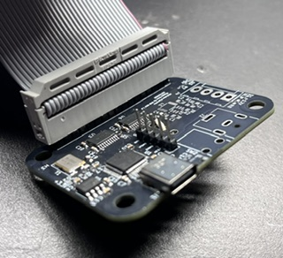

.... .. . s s s
+^""888h. ~"888h @88> :8 :8 :8
8X. ?8888X 8888f %8P u. u. .88 .88 u. u. u. .88
'888x 8888X 8888~ . u x@88k u@88c. .u :888ooo :888ooo ...ue888b x@88k u@88c. .u :888ooo
'88888 8888X "88x: .@88u us888u. ^"8888""8888" ud8888. -*8888888 -*8888888 888R Y888r ^"8888""8888" ud8888. -*8888888
`8888 8888X X88x. ''888E` .@88 "8888" 8888 888R :888'8888. 8888 8888 888R I888> 8888 888R :888'8888. 8888
`*` 8888X '88888X 888E 9888 9888 8888 888R d888 '88%" 8888 8888 888R I888> 8888 888R d888 '88%" 8888
~`...8888X "88888 888E 9888 9888 8888 888R 8888.+" 8888 8888 888R I888> 8888 888R 8888.+" 8888
x8888888X. `%8" 888E 9888 9888 8888 888R 8888L .8888Lu= .8888Lu= u8888cJ888 . 8888 888R 8888L .8888Lu=
'%"*8888888h. " 888& 9888 9888 "*88*" 8888" '8888c. .+ ^%888* ^%888* "*888*P" .@8c "*88*" 8888" '8888c. .+ ^%888*
~ 888888888!` R888" "888*""888" "" 'Y" "88888% 'Y" 'Y" 'Y" '%888" "" 'Y" "88888% 'Y"
X888^""" "" ^Y" ^Y' "YP' ^* "YP'
`88f
88

This is a floppy drive controller I designed around an STM32F0 micro. I designed both the schematic and board layout, and I hand soldered the PCB, wrote the firmware, and validated this project. This is designed to connect to a 5.25" floppy drive so that I can backup/ make copies of bootdisks for my older 8088 and 8086 machines.
My PCB design has working external SPI SRAM for buffer memory of the raw floppy disk data and has an optional isolated DC-DC buck power section for use with external DC power supply (seen on the right portion of the PCB in the image).
I plan on working on this further, getting this mountable on my Windows computer, this project has been placed on my backlog for the time being but the hardware is completed.